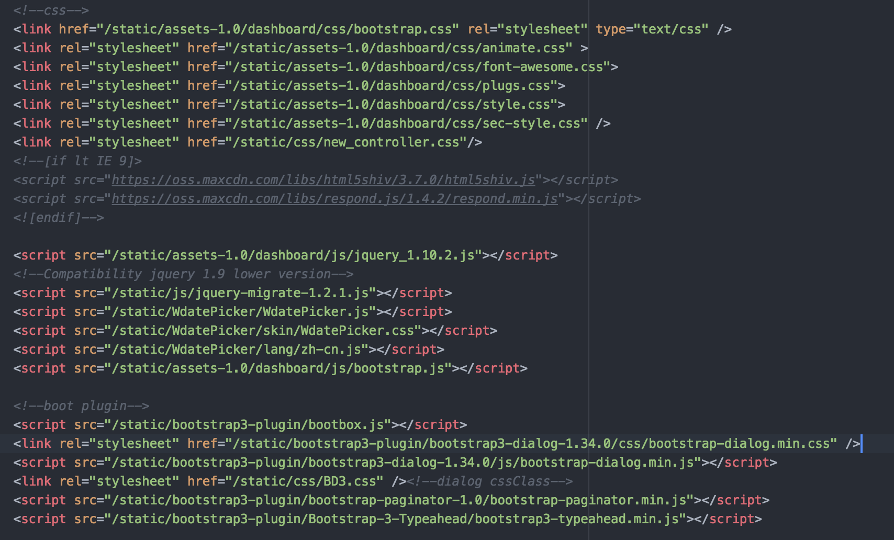

Jquery & Bootstrap
依赖管理
密闭作用域
JS 同步／异步加载
缺少包管理系统
缺少模块系统
// IIFE & Closure
var foo = (function Module() {
var something = [1, 2, 3]
function doSomething() {
console.log(something.join(" ! "))
}
return {
doSomething: doSomething
}
})()
var ModuleManager = (function ModuleManager() {
var modules = {}
function define(name, deps, impl) {
for (var i = 0; i < deps.length; i++) {
deps[i] = modules[deps[i]]
}
modules[name] = impl.apply(impl, deps)
}
function get(name) {
return modules[name]
}
return {
define: define,
get: get
}
})()
ModuleManager.define("bar", [], function() {
function hello(who) {
return "Let me introduce: " + who
}
return {
hello: hello
}
})
ModuleManager.define("foo", ["bar"], function(bar) {
var hungry = "hippo"
function awesome() {
console.log(bar.hello(hungry).toUpperCase())
}
return {
awesome: awesome
}
})
var bar = ModuleManager.get("bar")
var foo = ModuleManager.get("foo")
console.log(bar.hello("hippo")) // Let me introduce: hippo
foo.awesome() // LET ME INTRODUCE: HIPPO
exports/require 语法
NPM
标准库：文件操作的API等
CommonJS/Node Modules Example
// moduleA.js
module.exports = function( value ){
return value*2;
}
// moduleB.js
var multiplyBy2 = require('./moduleA');
var result = multiplyBy2( 4 );
AMD/RequireJS
CMD/SeaJS
Browserify
Webpack
AMD/RequireJS Example
// moduleA.js
define('moduleA', ['jquery', './math.js'], function($, math) {
//var _ = require('loadsh');
var HelloWorldize = function(selector){
$(selector).text('hello world');
};
return HelloWorldize;
});
// main.js
requirejs(['moduleA'], function(moduleA) {});
// index.html
$ browserify main.js > bundle.js
// index.html
AngularJS 1.x/2.0
React
Vue